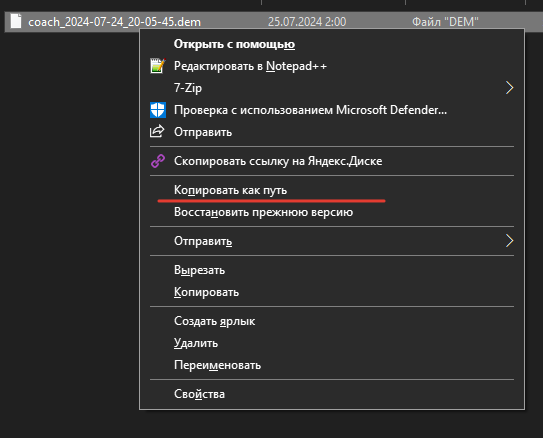
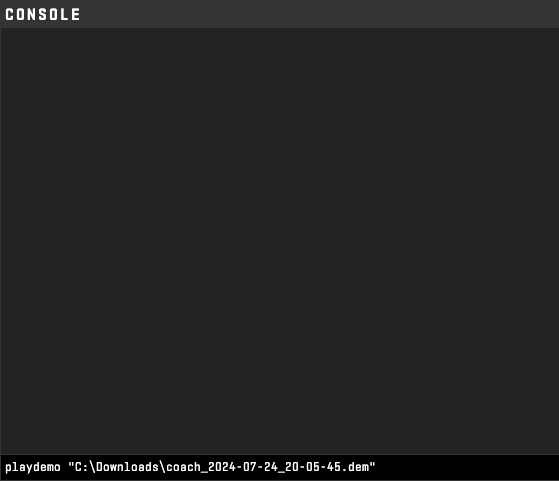
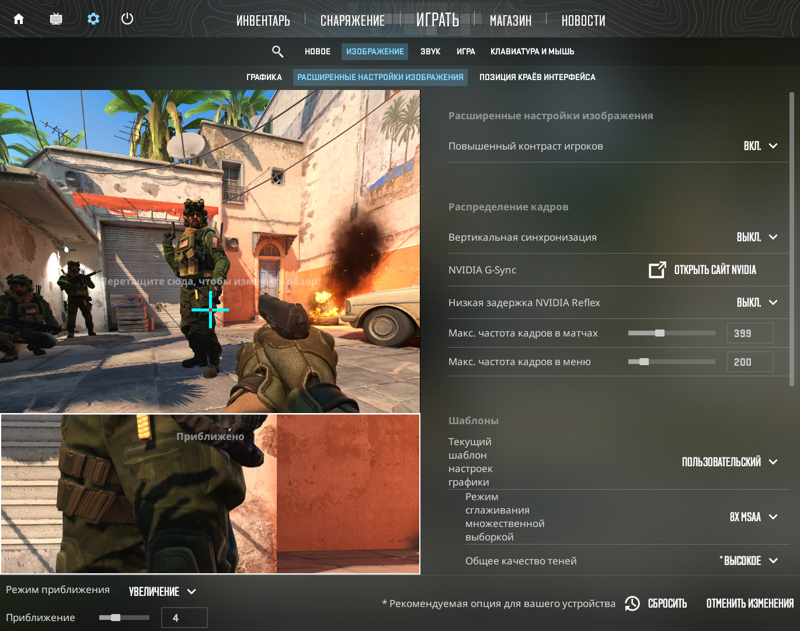
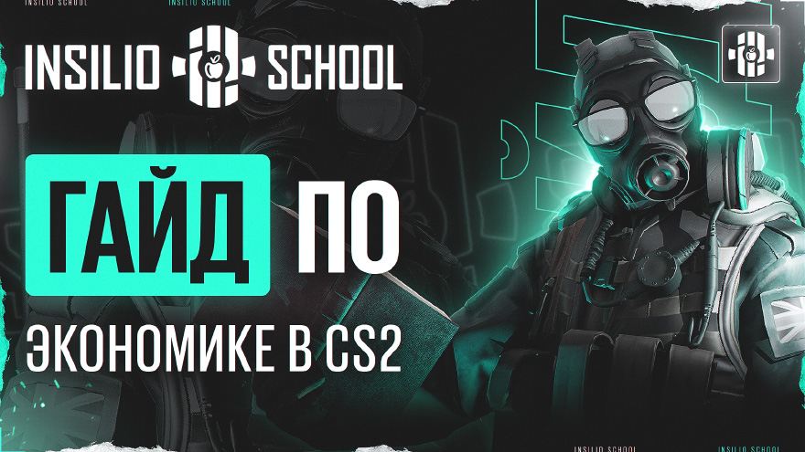

Общее
Общие гайды команды, не привязанные к картам: демки, TeamSpeak, графика, коммуникация, экономика и записи
Как открывать демки
Windows 10
- Нажмите правой кнопкой мыши по файлу демки (
.dem) с зажатым Shift. - В контекстном меню появится пункт «Копировать как путь».

Windows 11
- Нажмите правой кнопкой мыши по файлу демки (
.dem) и выберите в контекстном меню «Копировать как путь».
Открыть CS
- Откройте консоль (~).
- Напишите
playdemoи вставьте путь из буфера обмена (Ctrl+V). - Нажмите Enter.
playdemo <путь к демке>
Как пользоваться TeamSpeak
Ссылка на нужный TS-клиент: teamspeak.com/ru/downloads
Как смотреть демки с HLTV
Коммуникация
Правильное общение во время Freeze Time
- Не обсуждать прошлый раунд.
- Обсудить свою экономику, что будете делать и какая идея на раунд.
- Обсудить экономику соперника: что у них — бай, эко или форс?
- Просить дроп у человека, называя имя и то, что вам нужно. Пример: «Артём, дай мне эмку.» Плохой пример: «Дайте дроп.»
- Уведомить тиммейта/команду о том, как вы сыграете и какая угроза может быть. Пример: «Я буду играть вторым Б. Осторожно, мид не буду смотреть.»
Какую информацию нужно говорить во время раунда
- Инфу о нахождении соперника, AWP это или нет, о количестве ХП, если хорошо его надамажили.
- Где ты сам находишься и что смотришь.
- Откуда может прийти оппонент и что лучше ждать. Пример: «Осторожно КТ, я не смотрю.»
- Что у вас мало ХП.
- Считать смоки. Если у КТ нет смоков, можно заколить команде выходить с раскидом на эту точку.
- Что вы будете делать прямо сейчас или в ближайшее время.
Какую информацию говорить не нужно
- Сколько у кого пуль.
- Эмоции вроде «блин», «чёрт» и другие междометия.
- Упрёки вроде «ты же мог сыграть вот так, зачем ты это сделал?».
- За атаку — очевидную информацию: «один под Б», когда вы в соло под этой точкой и это не влияет на ситуацию. Если вы играете раунд под эту точку, говорите детальнее: «один прыгает на тачке под Б».
Когда нужно давать информацию повышенным тоном
- При получении уникальной инфы, которая поможет выиграть раунд. Пример: вы зашли на пустую точку и должны чётко сказать команде развернуться на ножах и бежать к вам на плент. Пример: вы увидели человека в спине у всей команды.
- Если вас не слышат — не используйте грубое слово, выделите голосом имя, а дальше спокойно скажите, что хотите.
- Если начинается балаган, люди говорят и думают не о том — скорректируйте их, обратите на себя внимание голосом и скажите, что нужно сделать (если вы колите), либо потребуйте, чтобы игроки перевели внимание на коллера.
Мини подкаст с zorte
Мини подкаст с Александром zorte об AWP и в целом о CS2.
Таймкоды
| Время | Тема |
|---|---|
| 0:00 | Начало |
| 1:15 | Не летит, ужасный день, ты что-то меняешь? |
| 3:05 | КЗ, ретейки? |
| 4:20 | КС2 стало проще, мнение прошников о том, что в игру можно играть меньше, чем в КСГО? |
| 6:00 | Какие карты можно играть без AWP, пример с Зайву и с картой Inferno в целом |
| 8:20 | На каких картах ты часто играешь без AWP? И почему иногда калаш лучше |
| 9:45 | AWP, которые хорошо играют с рифлой, сейчас в супер мете (гибридные) |
| 10:25 | Демки авперов и всё про них, какие смотреть и за кем |
| 11:20 | Про метовый пик от AWP |
| 12:56 | Где сложнее играть в КСГО или КС2 (с AWP) и почему? (тут про модельки в КС2) |
| 15:25 | Год назад было сложнее играть с AWP, чем сейчас? (в КС2) |
| 16:34 | Про SCAR |
| 18:00 | Лучшая и худшая карта для авпера |
| 21:30 | Общий совет всем, что тренить и т.д. Послушать ход мыслей и понять |
| 31:05 | Конец |
Настройки графики CS
Усреднённые настройки от про-игроков

Настройки NVIDIA
Тренировка аима
Игроки faydett и Pipw рассказывают Никите, как стрелять.
Тренировка от faydett
Тренировка от Pipw
Экономика

Базовые правила экономики в CS
- На пистолетках иметь минимум 3 армора за атаку, можно и больше. Пистолетки, в которых покупается 2 армора, приводят к поражениям: не хватает огневой мощи.
- Если вы проиграли анти-форс после выигранной пистолетки, нужно докупать в 0: в следующем раунде у вас будет 3300 и вы ничего не сможете купить, а если зафорсите, шансов выиграть раунд больше, чем с голыми юспами. Если сделаете эко и потом купите на 3300, вы отпустите атаку по счёту и экономике очень далеко вперёд.
- Смотреть на деньги сокомандников: если у двоих есть деньги на фулл бай, а у троих нет, стоит сделать полубай и оставить деньги на следующий раунд, чтобы закупиться всей командой.
- Отталкиваться от экономики соперника: если у него фулл бай, а вы хотите сохранить деньги на AWP, всё равно нужно купить хорошее оружие — важно выиграть раунд здесь и сейчас.
- Полный форс стоит делать в двух случаях: 1) если после эко в следующем раунде не будет фулл бая (на бай нужно от 4000); 2) у противников очень мало денег и вы можете переломить игру.
- Когда у команды эко, нужно делать фулл эко, даже если хочется взять фармилку или скаут: в следующем важном оружейном раунде не будет хорошего оружия, и у оппонентов с фризтайма будет преимущество в огневой силе.
- Если не хватает денег на фулл бай, а у тиммейтов много, обязательно попросить дроп у конкретного человека: «Ник, дай дроп, я сижу».
- Если у тебя много денег и ты видишь тиммейта с малым количеством денег, дай ему дроп.
- Лучше не покупать больше трёх фармилок после выигранной пистолетки: если противники сделают эко, можно остаться с большим количеством фармилок против сильных оружий. Рекомендуемое количество: 2–3.
- В зависимости от ситуации можно экономить гранаты, когда у противников эко.
- При серьёзном преимуществе — три и более против одного — лучшим решением будет смотреть в прицелы и не тратить гранаты.
- Когда нужно сейвить:
- когда раунд тяжело выиграть, даже если денег много, но это где-то 6–7 раунд в половине: так больше возможностей сыграть бай-раунды до конца половины. Проиграв 2–3 бая без сейвов, останешься без денег;
- когда в следующем раунде эко у мёртвых тиммейтов — лучше всего выживать втроём, чтобы раздропать оружия;
- ретейк, когда вас на двоих меньше и у противников фулл бай или форс;
- ретейк, когда у противников эко, но вас меньше на три человека.
- Когда нужно выбивать:
- когда у тебя много денег, а у оппонента немного — можно не выбивать плент, а не дать засейвить после взрыва бомбы;
- в последнем раунде половины;
- когда у противников форс, но вас на одного меньше;
- когда у противников эко, но вас на двоих меньше.
Лекция психолога
Материалы
- Роберт Сапольски «Почему у зебр не бывает язв» — видео 1, 2.
- Роберт Сапольски, книга «Почему у зебр не бывает инфаркта. Психология стресса»
- Дэниел Койл «Код таланта»
- Джеймс Клир «Атомные привычки»
- Роберт Чалдини «Психология влияния»
- Гоулстоун «Я слышу вас насквозь»
- Более общие темы — книги Ковалева С.В.
Контакты
Екатерина Люлина — психолог, ведущая тренингов и индивидуальных консультаций. Telegram / WhatsApp: Kateryna Liulina.
Ответы психолога (ч.1)
Ответы на вопросы III курса, часть 1 из 2.
1. Вопрос от #9941 JIack
С помощью каких рычагов можно воздействовать на сознание, чтобы не терять уверенность в себе и не терять фокус после ошибок, то есть, как не бояться проиграть?
Видео: 1_720wm.mp4
2. Вопрос от #9485 FlippyFloyd
Как сохранять фокус на чём-либо на необходимый промежуток времени? Замечаю за собой такую тенденцию, что если игра или какое-то другое занятие растягивается и идёт дольше запланированного, то теряешь концентрацию и как итог не можешь заниматься чем-либо в полную силу. Будто бы включается какой-то автопилот. Что с этим можно делать в долгосрочной перспективе и в момент, когда это происходит?
Видео: 3_720wm.mp4
3. Вопрос от #15424 erismat1mus
Какие стратегии могут помочь людям, которые испытывают трудности с доверием и социальной неуверенностью, в поиске группы для совместных занятий или игр? Как лучше преодолеть внутренний барьер и начать активнее взаимодействовать с окружающими, особенно когда есть страх негативной реакции со стороны других?
Видео: 2_720wm.mp4
4. Вопросы от #2829 leftien
1) Как бороться с тем, что тебя ни во что не ставят тиммейты, не слышат кол?
2) Как морально собраться, перестать фониться, когда не идёт игра, не думать о том «Как убить, перестрелять» и по итогу проиграть свои дуэли?
Видео: 4_720wm.mp4 (вопрос 1)
Видео: 5_720wm.mp4 (вопрос 2)
5. Вопрос от #3588 Fel0nix
Что делать, если один день хочется играть, второй не хочется, т.к. проиграл много игр, потом всю неделю не хочется играть из-за большинства поражений в один день, и потом каждый день не хочется жить и вообще что-то делать до того момента, пока не словишь много побед. Апатия, депрессия.
Видео: 6_720wm.mp4
Контакты
Екатерина Люлина — психолог, ведущая тренингов и индивидуальных консультаций. Telegram / WhatsApp: Kateryna Liulina.
Ответы психолога (ч.2)
Ответы на вопросы III курса, часть 2 из 2.
6. Вопрос от #4605 -Yon-
Как отделять игру от жизни: сильное влияние от того, как закончил игровой день. Остаётся неприятный осадок, если это поражение, нет настроения, плохой сон, пассивная агрессия; или если игровой день закончился в плюс, много побед и т.д. — приятное чувство, хорошее настроение.
Видео: 7_720wm.mp4
7. Вопрос от #14592 SLiMoffi
Как различные продукты меняют твоё ментальное состояние, в краткосрочный период и на длительной основе. Например алкоголь, никотин, шоколад, энергетики или просто вода.
Видео: 8_720wm.mp4
8. Вопросы от #8835 Viode
1) Столкнулся с проблемой, что очень тяжело идут игры и тренировки в большом и регулярном объёме (4+ часа). Связываю это с тем, что также учусь в университете. Можете дать совет по совмещению деятельности?
2) Посоветуйте, пожалуйста, новых книжек по психологии, полезных для спортсмена.
Видео: 9_720wm.mp4 (вопрос 1)
Видео: 10_720wm.mp4 (вопрос 2)
9. Вопрос от #983 G1ovver
Как одним словом или предложением поменять эмоциональное состояние команды в тимспике, когда всё плохо, ничего не получается и ощущается, что твои колы не слушают из-за фона. Из-за такого не смогли включиться в игре на выход в ESEA Main. Мне, будучи кэпом-коллером, как самому перебороть себя и заставить зажечься хотя бы одному человеку?
Видео: 11_720wm.mp4
10. Вопрос от #14517 YaN1k2
Что делать, если нет стабильности в игре? Одну играю 5/20 (плохо), сразу другую играю 20/8 (отлично). Числа как пример.
Видео: 12_720wm.mp4
Контакты
Екатерина Люлина — психолог, ведущая тренингов и индивидуальных консультаций. Telegram / WhatsApp: Kateryna Liulina.